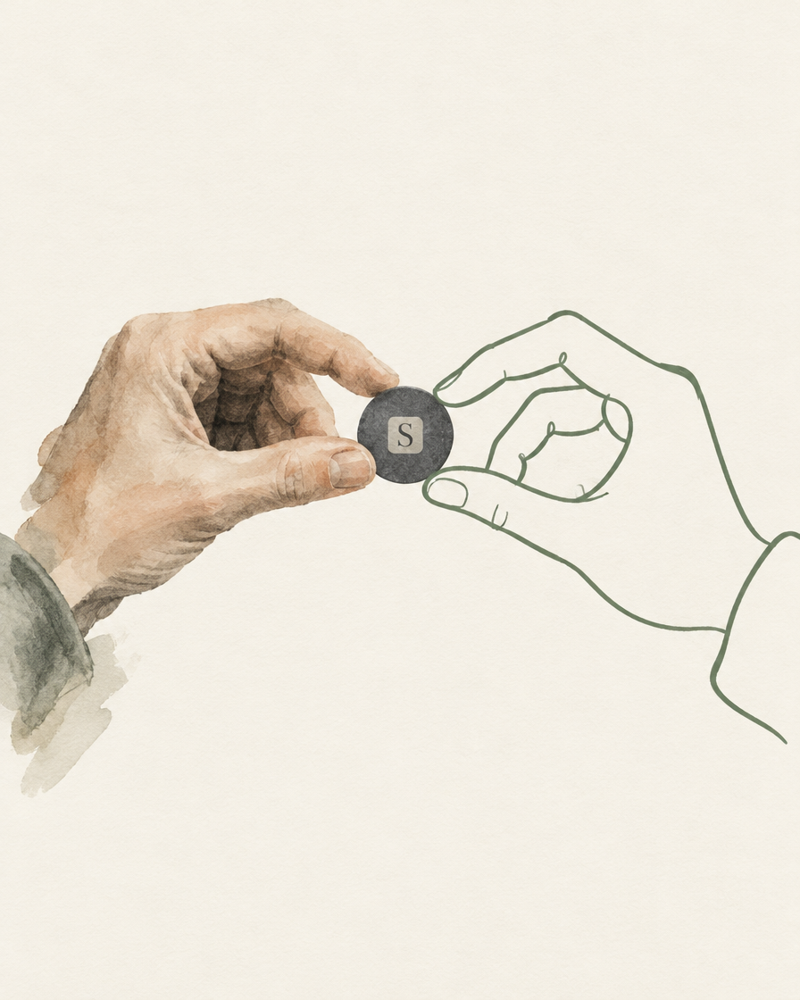
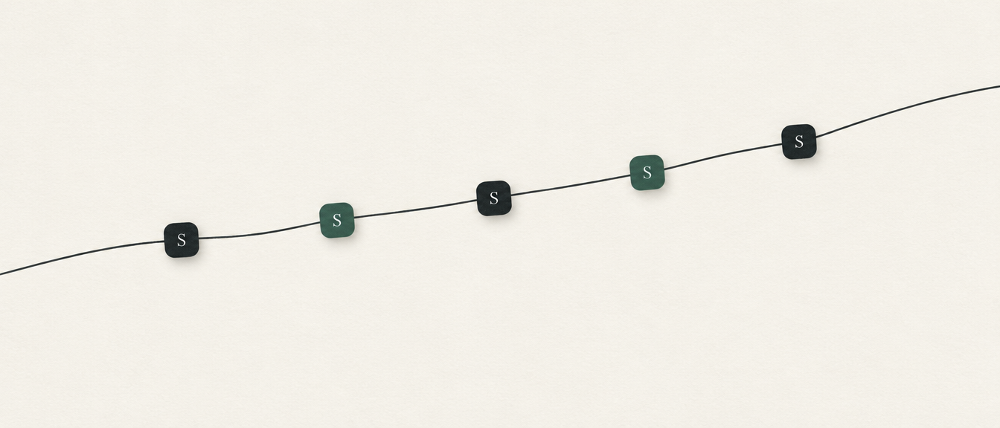

Direction 1Recommended
The Seal Imprint
A wax seal pressed into paper. The S is two strokes woven into one letter: charcoal for the person, sage for the helper. Says the name, the trust promise and "you and your AI, together" in one object.
- ＋A real object: tactile, timeless, nothing like it in crypto
- ＋Becomes the "sealed" stamp animation on every approval
- －Needs a clean flat version for tiny sizes (easy)
App iconLoadingApproval stampEmpty statesWebsite hero

Direction 2
Two Hands, One Coin
A human hand in soft wash, a second hand drawn as one calm sage line. Between them, one coin carrying the seal. The story of the product in a picture: a person and their helper, holding the same money.
- ＋Warmest and most human of the three; great for mum
- ＋A whole illustration language we can extend (hands + line figures)
- －It's a scene, not a mark: won't survive as an icon
Welcome screenWebsiteAdsCelebration moments

Direction 3
The Ledger Thread
One continuous line, like the chart on Home, threaded through small seal tiles like beads. "Every move, sealed." Flat, graphic, animates beautifully as a loader or progress bar.
- ＋Ties directly to the hero chart already in the app
- ＋Flexible: banner, divider, loader, motion logo
- －Abstract; needs the wordmark next to it to mean anything
LoaderDividersSocial bannersMotion ident